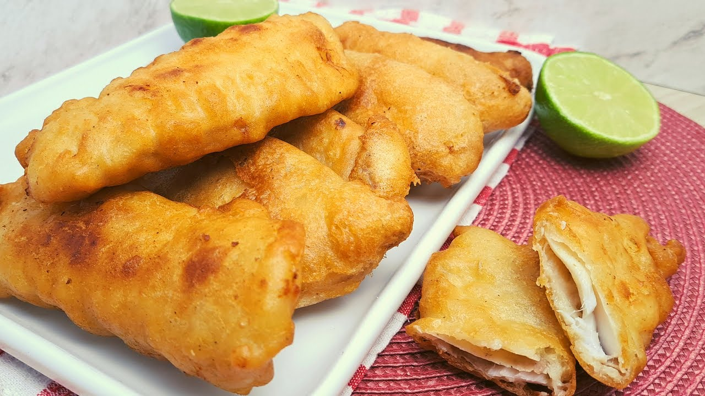

Peixe Empanado

Desfrute do prazer de preparar e saborear peixe empanado em casa com esta receita simples e deliciosa.
A crosta crocante e o interior macio do peixe criam uma combinação irresistível que certamente agradará a todos. Siga os passos fáceis e delicie-se com este prato que é perfeito para qualquer ocasião!
Ingredientes
- 500g de filés de peixe (tilápia, pescada, merluza, etc.)
- Sal e pimenta a gosto
- Farinha de trigo para empanar
- Óleo para fritar
- 1 lata de cerveja Heineken (ou outra cerveja de sua preferência)
Etapas
- Tempere os filés de peixe com sal e pimenta a gosto.
- Em uma tigela, coloque cerca de 1 xícara de farinha de trigo. Reserve.
- Abra a lata de cerveja Heineken e despeje em uma tigela grande.
- Gradualmente, adicione farinha de trigo à cerveja, mexendo continuamente, até obter uma massa homogênea e espessa.
- Aqueça o óleo em uma panela funda até atingir aproximadamente 180°C.
- Passe cada filé de peixe na farinha de trigo, cobrindo bem.
- Mergulhe o filé de peixe na massa de cerveja, garantindo que esteja completamente revestido.
- Com cuidado, coloque o filé de peixe empanado no óleo quente e frite até dourar, virando ocasionalmente.
- Retire o peixe frito da panela e coloque sobre papel toalha para escorrer o excesso de óleo.
- Sirva e aproveite este delicioso peixe empanado!